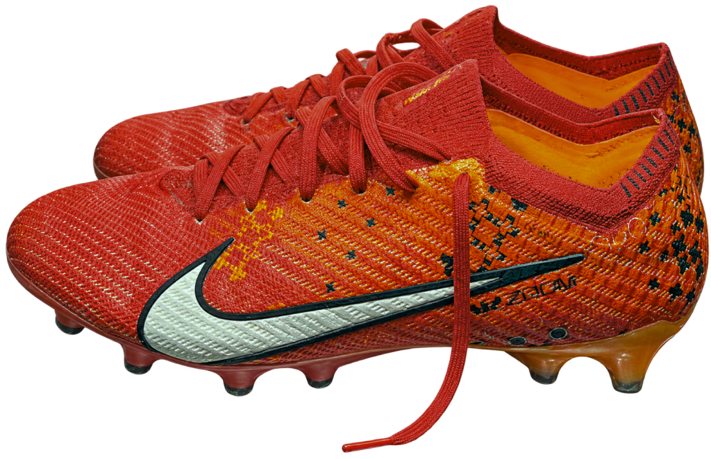

红色的球鞋
这是我自己买的第一双真心觉得好看的足球鞋。当时没有想太多，只觉得它很帅。
它陪我度过了很难踢上球的那两年。在学校，我很难和身边的人合得来，也遭遇了队友的排斥。我没有参加过任何一场校队比赛，连娱乐比赛也很少有机会加入。
穿了一年多后，鞋底坏了。我专门找了一个能发光的鞋柜，把它收藏起来。
鞋底坏了，这双鞋却被我留了下来。


这是我自己买的第一双真心觉得好看的足球鞋。当时没有想太多，只觉得它很帅。
它陪我度过了很难踢上球的那两年。在学校，我很难和身边的人合得来，也遭遇了队友的排斥。我没有参加过任何一场校队比赛，连娱乐比赛也很少有机会加入。
穿了一年多后，鞋底坏了。我专门找了一个能发光的鞋柜，把它收藏起来。
鞋底坏了，这双鞋却被我留了下来。